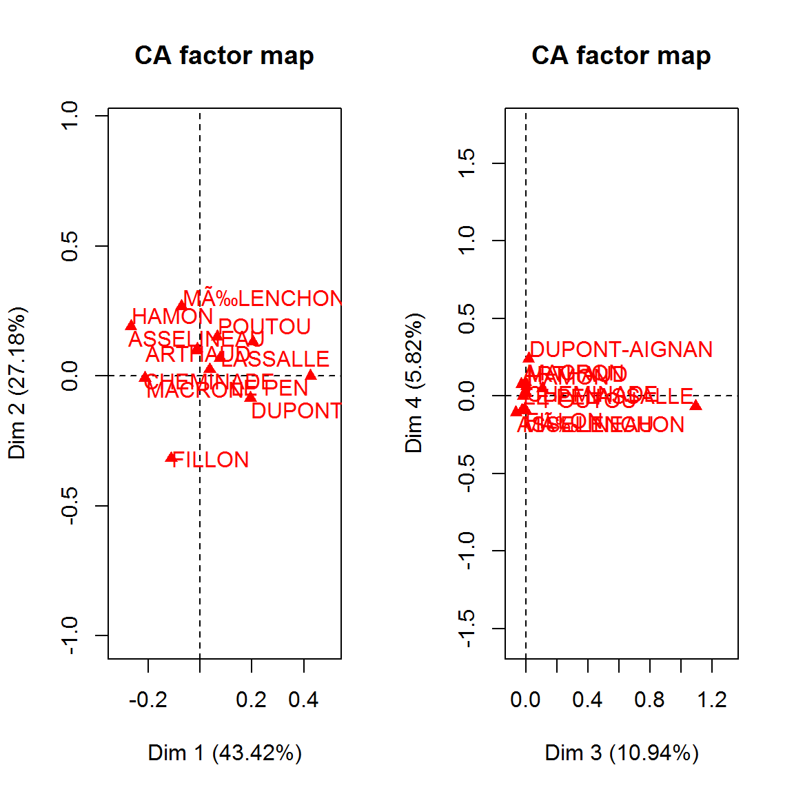
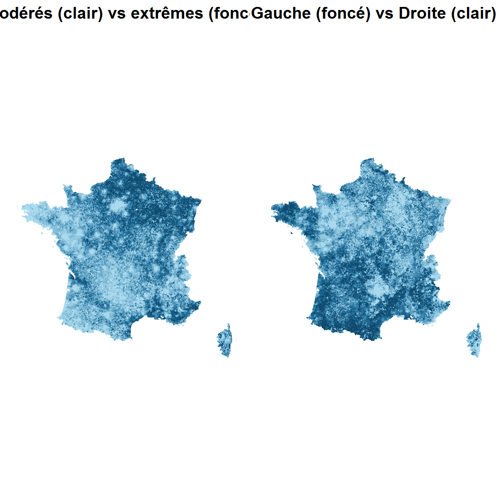
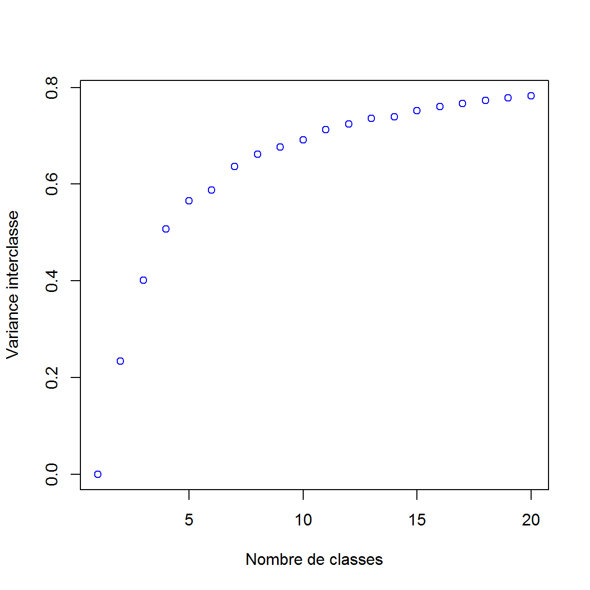
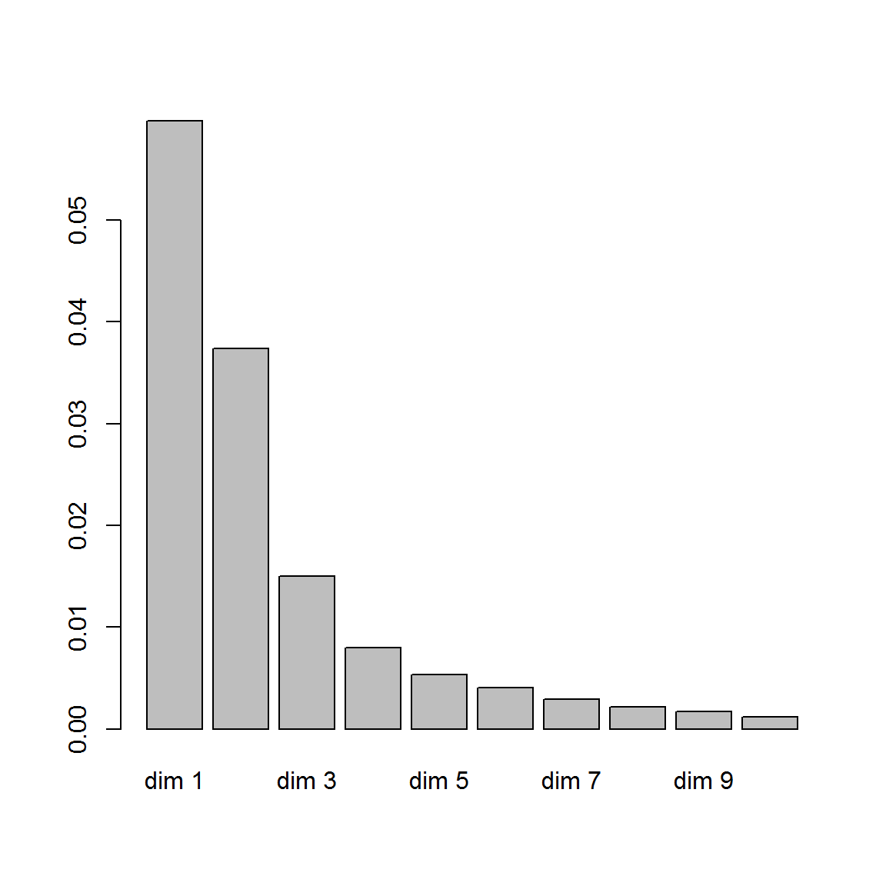
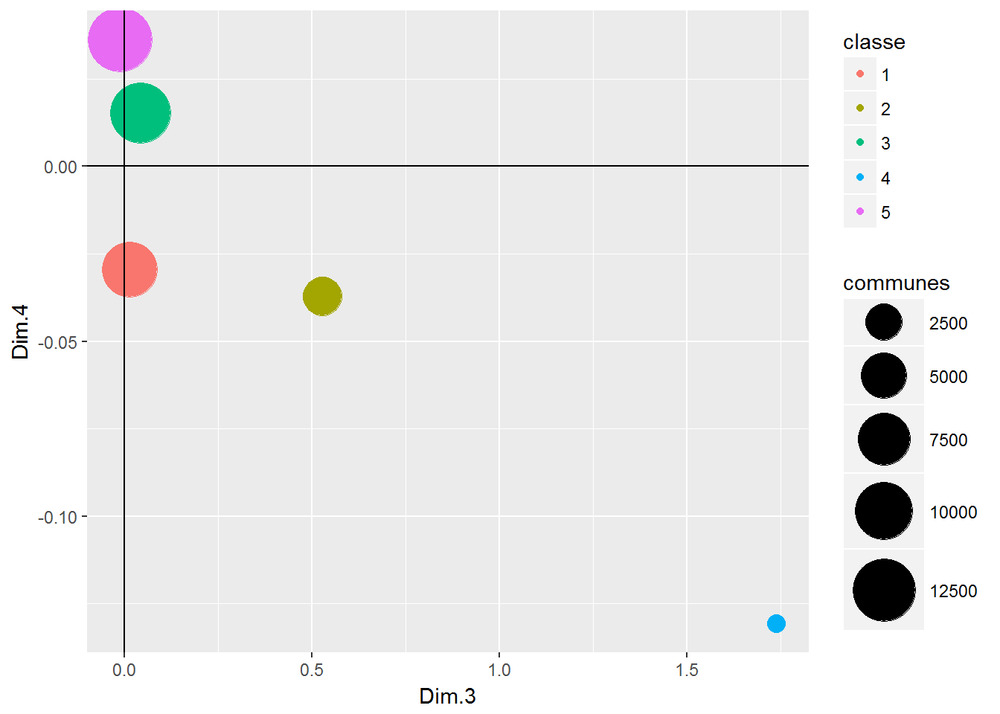
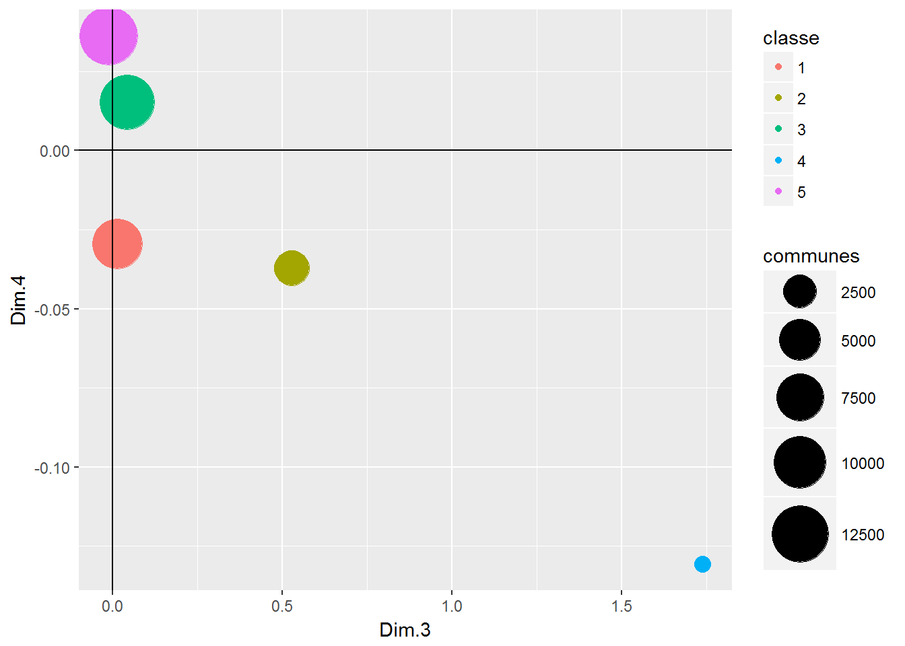

Chapitre 2 Contitution de la base de données
Pour nourrir le modèle de machine learning, nous avons procédé en plusieurs étapes :
- Identification des couples de communes contigües (seules susceptibles de fusionner)
- Constitution d’indicateurs de dissimilarités pour chacun de ces couples
- Collecte d’indicateurs communaux donnant les caractéristiques démographiques, sociales, économiques des territoire
- Calcul de la distance euclidienne entre chacun des couples sur la base de chacun de ces indicateurs
- Ajout d’indicateurs de flux, permettant de mesurer l’intensité des échanges (essentiellement de nature économique)
- Ajout de variables binaires pour les couples appartenant à un même zonage administratif ou d’étude
2.1 Création des couples de communes
Chaque ligne de la base de donnée représente un couple de communes contigües (c’est à dire qu’elle se touchent en au moins un point). La base est donc contstituée de deux colonnes “commune A” et “commune B” et on compte 218 000 couples, mais pour dans lesquels A,B et B,A forment deux lignes distinctes. On crée donc un identifiant unique pour A,B et B,A pour n’avoir qu’une occurrence des couples dans la base. Il y a donc, au final, envrion 109 000 lignes dans la base.
## Var1 Var2 first second ident codgeo1 codgeo2
## 1 1 25 1 25 1_25 01001 01028
## 2 1 86 1 86 1_86 01001 01093
## 3 1 134 1 134 1_134 01001 01146
## 4 1 172 1 172 1_172 01001 01188
## 5 1 319 1 319 1_319 01001 01351
## 6 1 377 1 377 1_377 01001 014122.2 Indicateurs communaux mobilisés
Pour déterminer les caractéristiques des communes (et ensuite déterminer si elles sont très différentes ou homogènes), nous avons utilisé la base comparateur de de territoires fournie par l’Insee. Celle-ci constitue une synthèses de diverses sources de données (recensement de la population, Connaissance locale de l’appareil production, fichiers d’état civil, fichiers fiscaux…). Certaines variables de cette base sont présentes pour 2008 et 2013, ce qui nous a permis de calculer des évolutions en plus des stocks. On a également ajouté la variable de densité de population (hab/km²)
A cette base, on ajoute quelques indicateurs supplémentaires : - Revenu médian communal (Source : Filocom2015). Attention, données à ne pas diffuser - Potentiel financier de la commune (Source : DGCL). Le potentiel financier indique le montant des recettes fiscal que percevrait la commune si elle pratique les taux de prélèvement moyens. C’est un proxy de la “richesse” des communes.
2.3 Indicateurs de flux
Pour mesurer l’intensité des liens entre les communes contigües, notamment les échanges économiques, nous avons rassemblé 4 indicateurs bilocalisés :
- Le nombre d’actifs se déplaçant de la commune A à la commune B (et réciproquement) (source : RP2013)
- Le nombre de migrations résidentielles entre les deux communes A et B intervenues entre 2012 et 2013 (source : RP2013)
- Le nombre de logements en location de la commune A détenus par des propriétaires de la commune B et réciproquement (source : filocom2015) Attention, données à ne pas diffuser -Le nombre de résidences secondaires de la commune A détenus par les propriétaires habitant la commune B et réciproquement (source : filocom2015) Attention, données à ne pas diffuser
2.4 Appartenance à un même périmètre
Enfin, nous avons créé des variables binaires d’appartenance à un même périmètre géogpraphique. Ces variables valent 1 si les communes A et B appartiennent aux mêmes :
- Etablissement public de coopération intercommunale (EPCI, eg communautés de communes), contours 2014 et 2016
- Département
- Zone d’emploi (Insee)
- Bassin de vie (Insee)
- Aire urbaine (Insee)
- Schéma de cohérence territoriale (document d’urbanisme supracommunal)
- Plan local d’urbanisme intercommunal
Ceci permet de mesurer la proximité institutionnelle (périmètres administratif) et fonctionnelle (zonages d’études de l’Insee) des communes.
2.5 Détermination de la couleur politique des communes
2.5.1 Un proxy de la couleur politique d’une commune
Pour alimenter le modèle de machine learning, une variable qui semble, a priori, très importante, est la proximité politique entre chaque couple de communes ; on peut penser que si les mairies, avant la fusion, ont des couleurs semblables, la probabilité d’un accord de fusion entre les deux communes est plus grande. N’ayant à disposition aucune donnée vraiment structurée concernant la couleur politique de telle ou telle mairie, nous avons opté pour l’analyse des résultats des élections présidentielles du premier tour de 2017. L’hypothèse est que les votes des électeurs lors de l’élection nationale donne un proxy raisonnable de l’orientation locale. Cette hypothèse est naturellement simplificatrice et n’est pas valable partout (implantation locale d’une personnalité, absence d’étiquette des élus locaux…).
Les données sont disponibles sur data.gouv.fr et proviennent du ministère de l’intérieur. Le choix s’est porté sur le premier tour dans la mesure où celui-ci contient plus de variance, puisque davantage de candidats.
2.5.2 Préparation des données
Avant de démarrer, il faut installer le package COGugaison, qui permet de passer facilement d’un millésime de géographique comunale à un autre. On charge en plus les packages du tidyverse, FactoMineR pour l’analyse des données, et sf pour la gestion des données géographiques. On charge également le fonds de carte communale de l’IGN. Pour le fonds de carte, il faut passer des arrondissements (Paris, Lyon, Marseille) à la commune (on ne dispose pas des informations à l’arrondissement dans la plupart des cas)
## Reading layer `COMMUNE' from data source `C:\Users\vivien.roussez\Documents\Work\Tampon\Fusion_communes\Sources\COMMUNE.shp' using driver `ESRI Shapefile'
## Simple feature collection with 36571 features and 18 fields
## geometry type: MULTIPOLYGON
## dimension: XY
## bbox: xmin: 99217.1 ymin: 6049646 xmax: 1242417 ymax: 7110480
## epsg (SRID): NA
## proj4string: +proj=lcc +lat_1=44 +lat_2=49 +lat_0=46.5 +lon_0=3 +x_0=700000 +y_0=6600000 +ellps=GRS80 +units=m +no_defsLes données initiales se présentent comme un fichier de 36000 lignes avec pour chaque candidats 7 colonnes donnant notamment le nom, prénom, nombre de voix et les pourcentages correspondants. Le premier travail consiste à passer de ce format “large” inexploitable à un format “long” qui aura un ligne pour chaque croisement commune*candidat avec en colonne le nombre de voix. On gère également le millésime du COG en se ramenant au COG2015 comme pour les autres variables que l’on ajoute par la suite.
2.5.3 Analyse factorielle des résultats
Maintenant que nous disposons d’une table exploitable, on peut réaliser une analyse factorielle pour pouvoir synthétiser le positionnement politique des communes. Pour cela, on effectue une analyse factorielle des correspondance, puisqu’on dispose de 2 variables qualitatives : la commune (individus lignes dans le tableau de contingence) et le candidat (individus colonne).

D’après l’histogramme des valeurs propres, on voit que l’inertie du tableau de contingence est très concentrée sur les 2 premiers axes factoriels, à hauteur de 70%. Le critère du point d’inflexion conduirait à retenir les 4 premiers axes (la dérivée seconde change de signe au niveau de la 4e valeur propre), pour 87% de l’inertie totale.

On observe un effet Guttman assez net sur le premier plan factoriel : on a une opposition nette entre les candidats extrêmes à droite et les candidats “modérés” sur la gauche. Le second axes semble davantage retracer le clivage gauche-droite, avec les candidats Macron et Le Pen proche du barycentre. Le dexième plan factoriel donne lui à voir des différences moins structurantes à l’échelle nationale, mais on voit nettement la particularité “locale” du vote Lassalle, ainsi que (dans une moindre mesure) de celui en faveur de Dupont-Aignan.
La représentation cartographique de ces axes factoriels :

2.5.4 Synthèse : typologie communale
Pour la suite des opérations (modélisation de fusion/ non fusion), nous allons garder les 4 variables quantitatives obtenues par l’AFC mais pour pousser la démarche jusqu’au bout, nous réalisons une classification (clustering) des communes à partir des coordonnées factorielles obtenues. Etant donnés le nombre d’individus et le manque de puissance de la machine sur laquelle je travaille (4Go de RAM), une CAH est impossible (sauf à faire un premier k-means pour diminuer la dimension…), nous réalisons donc un clustering avec l’algorithme k-means puis dbscan

Le gain de variance inter-classes augmente très rapidement quand on agmente le nombre de classe, mais le gain marginal s’atténue assez rapidement. On retient donc 5 classes, qui retracent près de 60% de la variance totale des quatre variables.
 

2.6 Synthèse : Dictionnaire des variables
La base compte au final 48 variables :
## [1] "ident" "first" "second"
## [4] "dist_P13_POP" "dist_SUPERF" "dist_P13_MEN"
## [7] "dist_NAISD15" "dist_DECESD15" "dist_P13_LOG"
## [10] "dist_P13_RP" "dist_P13_RSECOCC" "dist_P13_LOGVAC"
## [13] "dist_P13_RP_PROP" "dist_NBMENFISC13" "dist_PIMP13"
## [16] "dist_MED13" "dist_TP6013" "dist_P13_EMPLT"
## [19] "dist_P13_EMPLT_SAL" "dist_P13_POP1564" "dist_P13_CHOM1564"
## [22] "dist_P13_ACT1564" "dist_ETTOT14" "dist_ETAZ14"
## [25] "dist_ETBE14" "dist_ETFZ14" "dist_ETGU14"
## [28] "dist_ETGZ14" "dist_ETOQ14" "dist_ETTEF114"
## [31] "dist_ETTEFP1014" "dist_revmoy" "dist_pot_fin"
## [34] "dist_Pol1" "dist_Pol2" "dist_evol_pop"
## [37] "dist_densite" "dist_evol_nais" "dist_evol_dec"
## [40] "dist_evol_empl" "nb_locprop" "nb_RS"
## [43] "nb_mig" "nb_navettes" "dep"
## [46] "ze" "bv" "au"
## [49] "epci2014" "epci2016" "scot"
## [52] "plui" "fusion_2016" "fusion_2015"
## [55] "fusion"Le préfixe “dist_” indique qu’il s’agit d’un indicateur de dissimilarité. Le préfixe “nb_” indique qu’il s’agit d’un indicateur de flux. Les variables non préfixées sont les variables binaires d’appartenance géographique.
- P13_POP : Population en 2013
- SUPERF : Superficie (en km2)
- P13_MEN : Nombre de ménages en 2013
- NAISD15 : Nombre de naissances domiciliées en 2015
- DECESD15 : Nombre de décès domiciliés en 2015
- P13_LOG : Nombre de logements en 2013
- P13_RP : Nombre de résidences principales en 2013
- P13_RSECOCC : Nombre de résidences secondaires et logements occasionnels en 2013
- P13_LOGVAC : Nombre de logements vacants en 2013
- P13_RP_PROP : Nombre de résidences principales occupées par propriétaires en 2013
- NBMENFISC14 : Nombre de ménages fiscaux en 2013
- PIMP13 : Part des ménages fiscaux imposés en 2013
- MED14 : Médiane du niveau de vie en 2013
- TP6014 : Taux de pauvreté en 2013
- P13_EMPLT : Nombre d’emplois au lieu de travail en 2013
- P13_EMPLT_SAL : Nombre d’emplois salariés au lieu de travail en 2013
- P09_EMPLT : Nombre d’emplois au lieu de travail en 2009
- P13_POP1564 : Nombre de personnes de 15 à 64 ans en 2013
- P13_CHOM1564 : Nombre de chômeurs de 15 à 64 ans en 2013
- P13_ACT1564 : Nombre de personnes actives de 15 à 64 ans en 2013
- ETTOT14 : Total des établissements actifs au 31 décembre 2014
- ETAZ14 : Etablissements actifs de l’agriculture, sylviculture et pêche au 31/12/2014
- ETBE14 : Etablissements actifs de l’industrie au 31/12/2014
- ETFZ14 : Etablissements actifs de la construction au 31/12/2014
- ETGU14 : Etablissements actifs du commerce, transports et services divers au 31/12/2014
- ETGZ14 : Etablissements actifs du commerce et réparation automobile au 31/12/2014
- ETOQ14 : Etablissements actifs de l’administration publique, enseignement, santé et action sociale au 31/12/2014
- ETTEF114 : Etablissements actifs de 1 à 9 salariés au 31 décembre 2014
- ETTEFP1014 : Etablissements actifs de 10 salariés ou plus au 31 décembre 2014
- revmoy : Revenu médian par unité de consommation
- pot_fin : Potentiel financier de la commune (ressources fiscal si elle applique les taux de prélèvement moyens)
- Pol1 : Premier axe facttoriel de l’AFC sur les résultats électoraux (présidentielles 2017, tour 1)
- Pol2 : Deuxième axe facttoriel de l’AFC sur les résultats électoraux (présidentielles 2017, tour 1)
- evol_nais : évolution du nombre de naissances entre 2013 et 2015
- evol_dec : évolution du nombre de décès entre 2013 et 2015
- evol_pop : évolution de la population entre 2008 et 2013
- evol_empl : évolution du nombre d’emplois au lieu de travail entre 2008 et 2013
- RS : nombre de résidences secondaires de la commune A détenus par un propriétaire de la commune B (et réciproquement)
- loc_prop : nombre de logements loués de la commune A détenus par un propriétaire de la commune B (et réciproquement)
- mig : nombre de migrations résidentielles (déménagements) de la commune A vers la commune B (et réciproquement)
- navettes : nombre de déplacements domicile-travail de la commune A vers la commune B (et réciproquement)
- dep : appartenance au même département
- ze : appartenance à la même zone d’emploi
- bv : appartenance au même bassin de vie
- au : appartenance à la même aire urbaine
- epci2014 : appartenance au même EPCI (contour 2014)
- epci2016 : appartenance au même EPCI (contour 2016)
- scot : appartenance au même SCOT (schéma de cohérence territoriale)
- plui : appartenance au même plan local d’urbanisme intercommunal
2.7 Imputations et corrections
Afin d’avoir une base opérationnelle pour la partie statistiques descriptives et machine learning, nous avons enfin nettoyé les données : nous avons supprimé les variables pour lesquelles la part de données manquante était trop importante (>3%), imputé les valeurs manquantes par la moyenne, et remplacé les distances “infinies” (causée par une valeur nulle d’un indicateur pour une commune) par le maximum observé sur les autres lignes.
2.8 Calcul de l’indicateur de fusion
Etant donné que nous cherchons à prédire la fusion des couples de communes, nous allons créer une variable indicatrice de fusion. Pour cela, nous allons de nouveau utiliser le package COGugaison.
Nous prenons la base qui recense, d’une année à l’autre, les fusions / défusions. Dans notre cas, nous prenons les années 2015-2016 et 2016-2017 ainsi que les variables codgeo_2016, codgeo_2016 et typemodif.
## cod2016 cod2017 annee typemodif ratio
## 1 76676 76601 2017-01-01 d 0.3236074
## 2 76676 76676 2017-01-01 d 0.6763926
## 3 01095 01095 2017-01-01 f 1.0000000
## 4 01172 01095 2017-01-01 f 1.0000000
## 5 01098 01098 2017-01-01 f 1.0000000
## 6 01316 01098 2017-01-01 f 1.0000000Puis, nous filtrons uniquement sur les fusions.
Nous splitons les bases afin de recréer les couples de communes et nous ne gardons que les couples différents
Enfin, nous créons un indicateur de fusion sur chaque base qui vaut “1” quand il y a fusion “0” sinon puis nous réintégrons l’information dans notre base de travail
Nous avons donc:
## type_fusion annee_2015_2017 annee_2015_2016 annee_2016_2017
## 1 0 107308 107972 108418
## 2 1 1774 1110 664